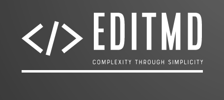
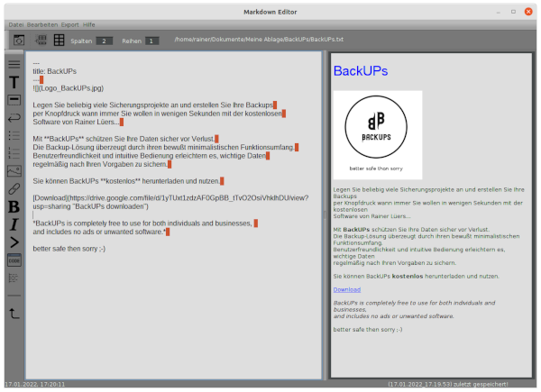

Wenn Sie jemals einen Artikel in Microsoft Word geschrieben und versucht haben,
den Text in ein Content Management System hochzuladen, haben Sie wahrscheinlich
viel Zeit damit verbracht, nach unordentlicher Formatierung und Hindernissen zu suchen,
die sich aus dieser plattformübergreifenden Konvertierung ergeben.
Das ist Grund genug, Ihnen die Magie eines Markdown-Editors vorzustellen und
warum Sie ihn verwenden sollten.
Wenn es um die Formatierung geht, verwenden die meisten Leute den integrierten Editor
ihres Content-Management-Systems, um Überschriften zu erstellen, den Text kursiv zu setzen oder Listen zu erstellen.
Sie müssen sich aber nicht auf eine komplizierte Symbolleiste verlassen oder Textformatierungen anwenden.
Sie können stattdessen einen Markdown-Editor verwenden.
Ich möchte Ihnen hier kurz erklären, was ein Markdown-Editor ist.
Das Ziel ist es, Sie mit einem minimalistischen Schreibwerkzeug vertraut zu machen, mit dem Sie Ihre Gedanken
niederschreiben und sie dann in ein Format wie HTML, ODT oder PDF zu speichern,
ohne eine Änderung vornehmen zu müssen.
Ein Markdown-Editor ist ein intuitives und leichtes Text-zu-HTML-Konvertierungstool für Autoren von Webinhalten.
Sie können damit Listen, Überschriften und Hervorhebungen formatieren sowie Links und Bilder einbinden.
Die Idee ist, Webinhalte zu erstellen, die so einfach zu lesen sind wie einfacher Text.
Markdown-Editoren gibt es seit der Jahrtausendwende, wurden aber erst populär,
nachdem John Gruber von Daring Fireball Markdown im Jahr 2004 eingeführt hatte.
Nachdem er frustriert war, lange, mühsame HTML-Codes schreiben zu müssen, um seine Inhalte zu formatieren,
arbeitete er mit dem verstorbenen Computerprogrammierer Aaron Swartz zusammen,
um eine Klartext-Formatierungssyntax zu erstellen, die Inhalte schnell und einfach in HTML übersetzen würde.
So wurde Markdown geboren.
Die Sprache verwendet eine leicht zu erlernende Syntax, um das gleiche Ziel wie HTML zu erreichen.
Es ist jedoch einfacher als Hypertext-Markup, und Sie müssen sich keine Gedanken über das Schließen oder Öffnen von Text machen.
Um einen Text webfähig zu machen, verwendet Markdown Zeichen und Symbole, mit denen Sie bereits vertraut sind.
Wenn Sie also wissen, wie man ein Emoticon erstellt oder einen Hashtag erstellt, können Sie Markdown nutzen.
Heute wird Markdown in Tools verpackt, bei denen Sie sich die Syntax nicht unbedingt merken müssen,
sodass selbst jemand ohne HTML-Erfahrung einen Markdown-Editor verwenden kann, um Inhalte für das Web zu erstellen.
Abgesehen von der Beschleunigung des Formatierungsprozesses bieten Markdown-Editoren die folgenden Vorteile:
Sie können in mehrere Formate exportieren
Markdown ist viel einfacher zu erstellen als HTML. Sie können den Inhalt in Formate wie
HTML, ODT oder PDF exportieren.
Sie können auf jeder Plattform arbeiten
Markdown funktioniert auf allen Plattformen wie z.B. Linux oder Windows.
Dies kann einen massiven Unterschied in Ihrer Produktivität bringen.
In der kostenlosen Software EditMD von Rainer Lüers sind alle oben genannten Features enthalten.
Das Programm überzeugt durch eine am täglichen Gebrauch orientierte Benutzeroberfläche.
Benutzerfreundlichkeit und intuitive Bedienung erleichtern es, in kürzester Zeit komplexe Seiten zu gestalten.
Sie können EditMD kostenlos herunterladen und nutzen.

EditMD is completely free to use for both individuals and businesses,
and includes no ads or unwanted software.*
complexity through simplicity ;-)